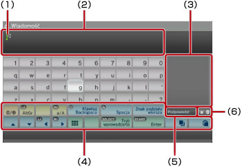
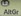
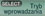
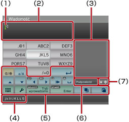

Informacje o menu XMB™ > Używanie klawiatury
Używanie klawiatury
Klawiatura jest wyświetlana automatycznie, zawsze gdy konieczne jest wprowadzenie tekstu. W tej sekcji omówiono korzystanie z klawiatury angielskiej. Aby uzyskać informacje o używaniu innych klawiatur, zobacz instrukcję użytkownika w odpowiednim języku.

(1) |
Kursor |
|---|---|
(2) |
Pole wprowadzania tekstu |
(3) |
Obszar opcji podpowiedzi słownikowych |
(4) |
Klawisze specjalne |
(5) |
Pole wyświetlane, gdy włączony jest tryb podpowiedzi |
(6) |
Tryb wprowadzania |
Lista klawiszy
Wyświetlane klawisze zależą od trybu wprowadzania i innych czynników.
 |
Wstawianie symbolu lub emotikony |
|---|---|
 / |
Przełączanie rodzaju wprowadzanych znaków |
| Przesuwanie kursora | |
| Usuwanie znaku po lewej stronie kursora | |
| Wstawianie spacji | |
| Wstawianie podziału wiersza | |
 / /  |
Powoduje skopiowanie lub wklejenie tekstu. |
 |
Przełączanie do klawiatury miniaturowej |
 |
Przełączanie trybu wprowadzania |
 |
Zatwierdzanie wpisanych, ale nie wprowadzonych znaków / wyjście z trybu klawiatury |
Wprowadzanie znaków
Podczas korzystania z trybu podpowiedzi słownikowych można wprowadzić kilka początkowych liter słowa, co spowoduje wyświetlenie listy powszechnie używanych słów rozpoczynających się od tych liter. Można wtedy użyć przycisków kierunkowych do wybrania potrzebnego słowa. Po zakończeniu wprowadzania tekstu należy wybrać klawisz „Enter”, aby wyjść z trybu klawiatury.
Wskazówki
- W niektórych trybach wprowadzania nie można używać emotikon.
- Tekst można wprowadzać w językach obsługiwanych przez system. Na przykład, jeśli jako język systemu jest ustawiony francuski, można wprowadzać tekst po francusku. Język systemu można ustawić, wybierając kolejno opcje
 (Ustawienia) >
(Ustawienia) >  (Ustawienia systemu) > [Język systemu].
(Ustawienia systemu) > [Język systemu]. - Całe pole wprowadzania tekstu można wyczyścić, naciskając jednocześnie klawisze
 + L1.
+ L1.
Używanie podłączonej klawiatury
Tekst można wprowadzać przy użyciu klawiatury USB lub klawiatury Bluetooth® (oba urządzenia są sprzedawane oddzielnie). Gdy wyświetlony jest ekran wprowadzania tekstu, naciśnięcie dowolnego klawisza na podłączonej klawiaturze umożliwia wprowadzanie tekstu przy jej użyciu.
Wskazówki
- Szczegółowe informacje dotyczące podłączania klawiatury Bluetooth® można znaleźć w temacie (Ustawienia) >
 (Ustawienia akcesoriów) > [Zarządzaj urządzeniami Bluetooth®] w niniejszej instrukcji.
(Ustawienia akcesoriów) > [Zarządzaj urządzeniami Bluetooth®] w niniejszej instrukcji. - Podczas używania podłączonej klawiatury nie można korzystać z trybu podpowiedzi słownikowych.
- Podział wiersza można wprowadzić w polu wprowadzania tekstu, naciskając klawisze ALT + ENTER. Podział wiersza można wprowadzić w stosownych przypadkach, na przykład przy pisaniu wiadomości w kategorii
 (Znajomi).
(Znajomi). - Całe pole wprowadzania tekstu można wyczyścić, naciskając jednocześnie klawisze SHIFT + BACKSPACE.
- Skopiowany tekst można wkleić, naciskając klawisze Ctrl + V. Zostanie wklejony ostatni skopiowany tekst.
Używanie klawiatury miniaturowej
Wybranie opcji na klawiaturze pełnowymiarowej powoduje przełączenie do klawiatury miniaturowej. Na klawiaturze miniaturowej do pojedynczego klawisza jest przypisanych kilka znaków.

(1) |
Kursor |
|---|---|
(2) |
Pole wprowadzania tekstu |
(3) |
Obszar opcji podpowiedzi słownikowych |
(4) |
Znaki, które można wprowadzić przy użyciu wybranego klawisza. Każde naciśnięcie przycisku |
(5) |
Klawisze specjalne |
(6) |
Pole wyświetlane, gdy włączony jest tryb podpowiedzi |
(7) |
Tryb wprowadzania |
 powoduje zmianę znaku, który można wprowadzić. Na przykład, aby wprowadzić literę [L], należy wybrać klawisz
powoduje zmianę znaku, który można wprowadzić. Na przykład, aby wprowadzić literę [L], należy wybrać klawisz  i nacisnąć przycisk
i nacisnąć przycisk  , aby przesunąć kursor za literę [L]. Następnie należy wybrać klawisz
, aby przesunąć kursor za literę [L]. Następnie należy wybrać klawisz Wskazówka
Można również korzystać z metody wprowadzania tekstu za pomocą pojedynczego naciśnięcia. Przy użyciu klawisza „Opcje” należy przełączyć metodę wprowadzania tekstu. W przypadku korzystania z metody pojedynczego naciśnięcia słowa, które można utworzyć przy użyciu kombinacji jednej litery (lub cyfry) z każdego wybranego klawisza, są wyświetlane jako podpowiedzi słownikowe. Na przykład, jeśli wybrano klawisz „DEF3”, w okienku podpowiedzi słownikowych po prawej stronie klawiatury ekranowej wyświetlone zostaną słowa zaczynające się od d, e, f i 3. Jeśli wyświetlany jest symbol „>”, należy wprowadzać dalsze litery, aż zostaną wyświetlone podpowiedzi.
Lista klawiszy
Wyświetlane klawisze zależą od trybu wprowadzania i innych czynników.
 |
Wstawianie symbolu |
|---|---|
 |
Przełączanie między wielkimi i małymi literami |
 |
Wstawianie podziału wiersza |
| Przesuwanie kursora | |
 |
Usuwanie znaku po lewej stronie kursora |
 |
Wstawianie spacji |
 / /  |
Powoduje skopiowanie lub wklejenie tekstu. |
 |
Przełączanie do klawiatury pełnowymiarowej |
 |
Wyświetlanie menu opcji |
| Przełączanie trybu wprowadzania | |
| Zatwierdzanie wpisanych, ale nie wprowadzonych znaków / wyjście z trybu klawiatury |